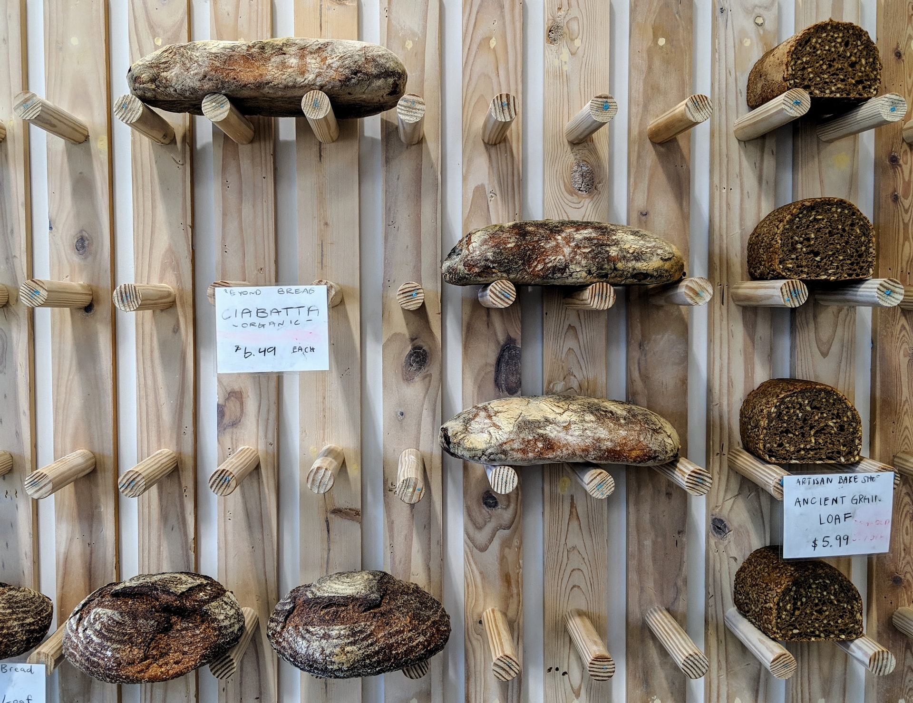

- Sanfrancisco Sourdough
- Newyork Sourdough
- Pitabread
SOURDOUGH FActory 에 오신 것을 환영합니다!
Sourdough bread can be made by anyone.
What is sourdough and how to make it? Here
If you invest 7 days, you can have a loaf of sourdough bread.
Its taste is phenomenal!
Let's get started!
